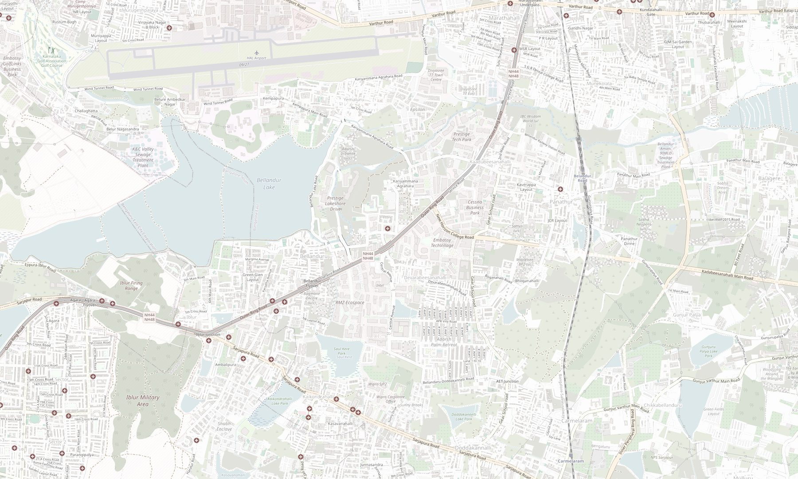

Service Area
My Service Area
Find Shipment Location
Misrouted Shipment

QJE
CAR
FB9
MQR
MQE
M2A
HSV
G24
QCK
HLT
WTF
M1J
My DC (BEU)
My Service Area
Last updated on 10 Aug’26
Area Update History
Area On 10th Aug, 7:01PM
Area on 10th Aug, 7:00PM
Area on 10th Aug, 6:59PM
Area on 10th Aug, 6:57PM
Current Pincodes560087, 560035, 560102, 560103
Daily 3p + Valmo Order Counti1150/day
Increase your orders upto this by improving DC performance
Daily Valmo Order Counti790/day
Increase your orders upto this by improving DC performance
Map Layer
Select a layer to view nearby hubs or exact pincode boundaries on the map
Pincode Boundaries
Neighbouring DC Serviceable Areas
‹
+−
Map data © OpenStreetMap contributors